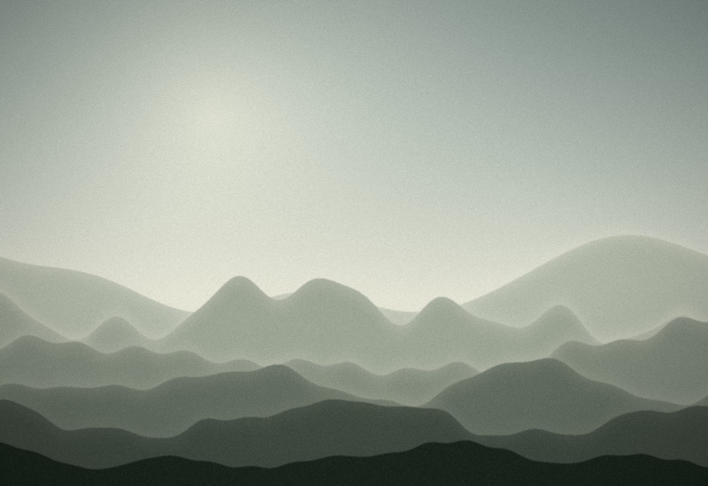

Estancia 01
Souto
La más amplia, en la esquina sur. Cama de 180, butaca junto a la ventana y bañera exenta bajo la viga original.
- 32 m²
- 2 huéspedes
- Bañera exenta
- Vistas al valle
130 € / noche